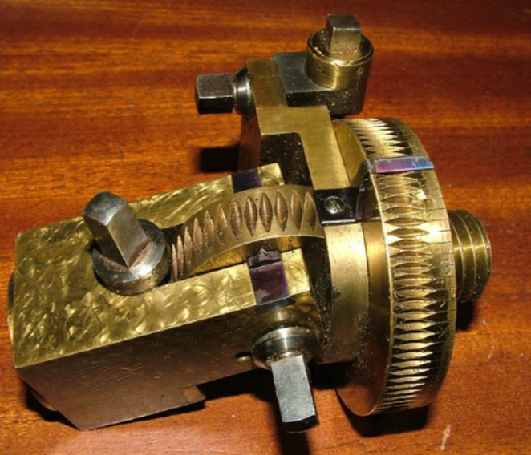
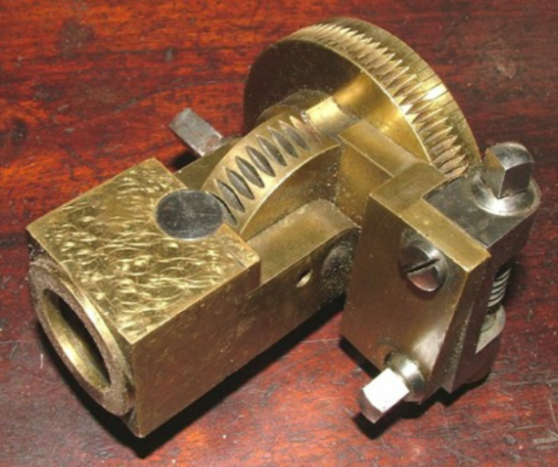

Overview
An Oblique Chuck is used in conjunction with a dome chuck or a rectilinear chuck to position objects in ways that a dome chuck cannot do. The details are difficult to explain, and are better explained by John Edwards' document.
Lindow Machine Works makes a very nice one that they call an oblique dome chuck.
|

|

|
|
Antique Oblique Chuck
|
Just getting started?
You can delay getting one of these.
|
About this site
Disclaimer : eMail comments to me at OTBookOfKnowledge @ Gmail.com. The process of woodturning involves the use of tools, machinery and materials which could cause injury or be a health hazard unless proper precautions are taken, including the wearing of appropriate protective equipment.
|